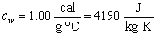
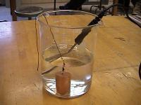
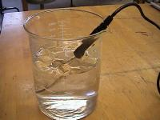
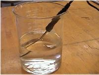
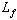
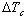
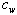

|
|

|
223 Physics Lab: Specific and Latent Heat
|
223 & 224 Lab Overview |
Return to Physics 223 Labs
Purpose
The purpose of this lab experiment is to measure the specific heat
capacity of unknown metal samples and also to determine
the latent heat of fusion of water. In
addition, we will study the effectiveness of different calorimeters.
Background
When energy in the form of heat,
 ,
is added to a material, the temperature
of the material rises.
Note that temperature, in units of degrees Celsius (°C) or
Kelvin (K), is a measure of
how hot or cold a substance is, while heat, in units of joules (J)
or calories (cal), is a measure of its thermal
energy. 1cal = 4.19J. ,
is added to a material, the temperature
of the material rises.
Note that temperature, in units of degrees Celsius (°C) or
Kelvin (K), is a measure of
how hot or cold a substance is, while heat, in units of joules (J)
or calories (cal), is a measure of its thermal
energy. 1cal = 4.19J.
A measure of the efficiency with which a substance can store this heat energy
is known as specific heat capacity, or simply the specific heat,
.
The greater the material's specific heat, the more energy must be added to
change its temperature.
As an example, the specific heat of water is given as
 ,
which means that 1.00 calorie of heat is necessary to raise one gram of water
one degree Celsius, or 4190 joules of heat are necessary to raise one kilogram
of water one Kelvin. Specific heat values for various other materials are listed
in Table 1 below.
The heat necessary to cause a temperature change,
,
in a material of mass,
,
is given by the equation
where
is the specific heat capacity of that material.
As usual, the change in temperature of the substance
is the difference between its final and initial temperatures,
 . .
Table 1
|
Specific and Latent Heat Values
|
|
|
Specific Heat
|
Latent Heat of Fusion
|
|
Material
|
(cal/g °C)
|
(J/kg K)
|
(cal/g)
|
(J/kg)
|
|
Aluminum
|
0.215
|
900
|
94.5
|
3.96x105
|
|
Copper
|
0.092
|
385
|
49.0
|
2.05x105
|
|
Iron
|
0.107
|
448
|
63.7
|
2.67x105
|
|
Lead
|
0.031
|
130
|
5.5
|
0.23x105
|
|
Brass
|
0.092
|
385
|
Unknown
|
Unknown
|
|
Magnesium
|
0.245
|
1030
|
88.0
|
3.7x105
|
|
Zinc
|
0.093
|
390
|
27.0
|
1.1x105
|
|
Styrofoam
|
0.27
|
1131
|
Unknown
|
Unknown
|
|
Air
|
0.240
|
1006
|
N/A
|
N/A
|
|
Water
|
1.000
|
4190
|
N/A
|
N/A
|
|
Ice
|
0.500
|
2095
|
79.7
|
3.34x105
|

When two bodies having different temperatures come into contact with each
other, heat energy is transferred between the bodies. Take, for example,
placing a piece of hot metal into a container of cool water. From experience we
know over time that the metal sample will become cooler, while the water
and its container will become warmer, until an equilibrium temperature
is reached.
Put another way, according to the law of energy conservation
the total heat energy lost by the metal is the total heat energy gained
by the water and container:
The negative sign is used to maintain our sign convention for heat; we set
the hot side to be negative because energy is leaving the hot sample.
Equation 2 holds true if no heat is exchanged with the surrounding environment
and if none of the materials undergo a phase change.
To isolate this experiment from the environment we will utilize two types of
calorimeters: a simple styrofoam cup
(Figure 3 below) and a more
traditional wooden calorimeter with an aluminum cup insert
(Figure 4 below). You will determine the effectiveness
of both of these calorimeters in this experiment.


If the materials undergo a phase change, as shown in the above
images, we can not use
Equation 2. If
a phase change is experienced, for example by melting or boiling, the
internal energy of the material changes, but its temperature does not.
Because this energy change does not alter the temperature of the material,
we refer to this heat as latent, or "hidden", heat
 .
In the
case where a solid changes into a liquid (melting) we refer to the
latent heat of fusion, .
In the
case where a solid changes into a liquid (melting) we refer to the
latent heat of fusion,
 ,
which is defined as the amount of heat necessary to change one
gram of a solid to a liquid without a temperature change. Note that latent
heat of fusion literally means "hidden heat which causes melting".
The heat required to completely melt a given mass,
,
of a substance is given as
In Objective 3 of this experiment, you are to determine the latent heat of fusion
of ice,
 .
Here, you will add some ice cubes to
a water bath at room temperature.
Heat is removed from the water bath to both melt the ice and
warm the melted ice water to an equilibrium temperature. Again, from energy
conservation arguments we can write .
Here, you will add some ice cubes to
a water bath at room temperature.
Heat is removed from the water bath to both melt the ice and
warm the melted ice water to an equilibrium temperature. Again, from energy
conservation arguments we can write
Note that while in each experiment, the initial temperatures of each material
is different, they end up at the same the final temperature.
A common and simple method of checking your calorimetry results is to
calculate the density of your material. If you are having trouble determining
the identity of your material based on their specific heat values, often
times a quick density measurement
can aid you in determining which metal you have in your
possession. Density values of some common materials are found in Table 2
below.
Table 2
|
Density of Various Materials
|
|
Material
|
g/cm3
|
|
Aluminum
|
2.7
|
|
Copper
|
8.96
|
|
Iron
|
7.87
|
|
Lead
|
11.3
|
|
Brass
|
8.4
|
|
Magnesium
|
1.74
|
|
Zinc
|
7.14
|
|
Lead
|
11.3
|
|
Water
|
1.00
|
|
Ice
|
0.917
|
Objectives
Prior to the experiment, obtain two samples of the same metal and
place them both in a hot water bath. Allow enough time for the samples to
reach an equilibrium temperature.
- With one of your metal samples, use the wooden calorimeter and
determine the specific heat,
,
of the metal sample and ascertain the identity of the metal sample.
Note that the calorimeter cup is made of aluminum.
- Use your other metal sample to determine if a styrofoam cup
is a reasonable substitute for the wooden calorimeter. When
using the styrofoam cup you may
assume that there is no heat lost or gained by the styrofoam cup.
That is, we can assume
 =
while =
while

= 0 and therefore no heat is transferred to the cup.
Is there a way to determine if this is a valid assumption?
- Obtain a small amount of ice from your instructor and use the styrofoam
cup as your calorimeter to determine the latent heat of fusion
of ice,
.
- Use density arguments to verify the identity the of your metal sample.
Equipment and setup
- (Figure 1.) Two metal samples. Your lab group will need
two pieces of either sample for this experiment.
- (Figure 2.) The metal samples are heated within a
water bath shown here. The apparatus includes a
stainless steel container and hot plate. A glass thermometer
is used to monitor the temperature
of the water bath. The rod and clamp are used
to hold the thermometer in place. (See Caution note below!)
- (Figure 3.) The styrofoam calorimeter.
- (Figure 4.) A typical wooden calorimeter.
The metal cup is made of aluminum.
- (Figure 5.) The Vernier computer interface and
stainless steel temperature
probe. The probe is useful for accurately monitoring the
temperature of the water contained in the calorimeter.
- (Figure 6.) A screen shot of the Thermometer program located
in the 223 Lab Programs folder on the computer desktop. See the
Hints and Cautions section
below to learn how to import your
screen shots into your lab report.
- (Figure 7.) A triple-beam balance.
- (Figure 8.) Wear the hot-hand protector when handling
the hot stainless steel container.
- Ice
- Paper towels
- Small beaker
- Vernier caliper
|
[Click on images to enlarge.]
|
Hints and Cautions
- Caution!!! The hot plate, stainless steel container and the
metal samples are quite likely to be very hot. Handle with care.
- Caution!!! When determining the density of your metals,
allow your sample to cool! Do not handle hot ingots!
- Caution!!! Do not set books, papers or any other flammable
materials close to the hot plates!
- Caution!!! When using a clamp to secure the glass thermometer,
use caution when tightening the clamp so the thermometer does not break.
- This lab could prove very frustrating and may have to be repeated several
times if you do not think through the steps ahead of time. Carefully
plan your experimental procedure. Also, perform all your calculations in the
lab room before you head home.
- The software for this lab is located on the lab computer's desktop
in a folder labeled Lab Programs.
- The precision of the temperature probe is given as
±0.2°C at 0°C, and ±0.5°C at 100°C.
- The temperature software is programmed to record data for only
400s (~6.5 minutes). While this is ample time to make your calorimeter
readings, make sure that you put the metal samples in the calorimeter
with enough time to make the necessary measurements.
- When using the Logger Pro software, you can easily examine the value
of each data point with your mouse by selecting Analyze and then
Examine from the software's menu bar.
- You may wish to include a screen shot image of the temperature
measurements in your lab writeup. To do so, with the image on the
screen, press the Print Screen button on the keyboard. This will
place the screen shot image into memory. Then open the Paint application
from the computer desktop and Paste the image. Paint is a very simple
application, but you can alter the size of the image using the
Sketch/Skew command from the Image menu. For best results, save the
image in the GIF format. The image can then be inserted into your
word document.
- Due to various thermal properties of styrofoam, you may assume that
no heat is absorbed or lost by the styrofoam cup calorimeter in any
of the experiments. Is this a valid assumption?
- Be sure to turn off the hot plate when the experiment is completed!
Online Assistance
- Compare the market price
of a few metals
- Using the vernier caliper
- Clemson Physics Lab Tutorials
Lab Report Template
Each lab group should
download the Lab Report Template
and fill in the relevant information
as you perform the experiment. Each person in the group
should print-out the Questions section and answer them individually.
Since each lab group will turn in an electronic copy of the lab report,
be sure to rename the lab report template file. The naming convention is as
follows:
[Table Number][Short Experiment Name].doc.
For example the group at lab
table #5 working on the Ideal Gas Law experiment would rename their template file
as "5 Gas Law.doc".
Nudge Questions
These Nudge Questions are to
be answered by your group and checked by your TA as you do the lab. They
should be answered in your lab notebook.
General Nudges
- Carefully think out all the steps for these Objectives. What is your
experimental procedure for each?
- When will you begin taking temperature measurements of the calorimeter
bath?
- Should the calorimeter's water bath be stirred during the experiment?
Should it be stirred continually? Why or why not?
- What is the uncertainty of the temperature of the calorimeter bath? That is,
what is the precision of the temperature probe?
- What is the uncertainty in the mass measurements?
- What are the major sources of error for these experiments? How can these
errors be reduced?
Objective 1 and 2 Nudges
- What quantities are needed to be measured in this Objective?
- Which equation(s) will you use for this Objective?
- What is the uncertainty of the temperature of the hot water bath? Remember,
the hot water bath temperature is measured with the glass thermometer.
- How is the initial temperature of the metal samples measured? What
steps did you take to insure that this is an valid measurement?
- How much water will you add to the calorimeter before the metal sample is
inserted? What factors enter into your decision?
- When will you begin taking temperature measurements of the calorimeter
bath?
- How will you reduce the experimental error when transferring the
hot metal sample to the calorimeter?
- How will you know when to stop taking data for this Objective?
- If the thermometer or temperature probe touches the metal sample or
metal container, how will this affect the temperature measurements, if
at all?
- How is
determined for each material in this Objective?
- What is the uncertainty of the
measurements?
- When Objective 1 is completed, should you return the metal sample to the
hot water bath? Why or why not?
Objective 3 Nudges
- What quantities are needed to be measured in this Objective?
- Which equation(s) will you use for this Objective?
- How much water will you add to the calorimeter before the ice is
inserted? Is more better than less?
- When will you begin taking temperature measurements of the calorimeter
bath?
- How much ice will you use? Is more better than less? What factors
enter into your decision?
- How will you know when to stop taking data for this Objective?
- How is
determined for each material in this Objective?
- What is the uncertainty of the
measurements?
Objective 4 Nudges
- How did you determine the density of your metal?
Questions
These Questions are also found in the lab write-up template. They must be answered by
each individual of the group. This is not a team activity. Each person should
attach their own copy to the lab report just prior to handing in the lab to your
TA.
- Which is the better calorimeter: the traditional wooden one, or the
styrofoam cup? Justify your reasoning.
- Of the materials listed in Table 1, which is
the best choice for storing solar heat energy captured by solar cells? Why?
- What are the advantages of using styrofoam coffee cups over aluminum ones?
- In Objective 2 we assumed that there was no heat lost to styrofoam calorimeter.
Was this a valid assumption? Justify your conclusion.
- Use the fact that

(the specific heat of water) is large to help explain the role that
oceans play on the world's climate.
- Why are pots used for cooking often made of copper bottoms with aluminum sides?
You may need to consider the metals' specific heats, densities and price
per pound.
TA Notes
- Let the students know that if the string falls in the hot water bath
that you, the TA, will remove it.
- Do not allow the vernier calipers become wet.
- When finished, the students should re-tie the temperature sensor
cable. Do not misplace the twist ties.
- The vernier calipers, thermometers and temperature probes should
be stored on the TA desk and returned at the end of each lab
period.
- It may be enlightening for groups to present their temperature data
during the oral presentations. It will give the other groups to point out
obvious mistakes: beginning the data taking process too late; ending the
data taking process too soon; touching the hot ingots with the
temperature probe, etc.
- You may wish for students to analyze these two temperature screen shots
for a quiz grade or part of an oral presentation.
They should be able to discuss the mistakes made by the experimenters.
Quiz #1 |
Quiz #2
Data, Results and Graphs
Answers to Questions
CUPOL Experiments
Vernier tutorial.
If you have a question or comment, send an e-mail to Lab Coordiantor:
Jerry Hester
223 & 224 Lab Overview |
Return to Physics 223 Labs
|
|